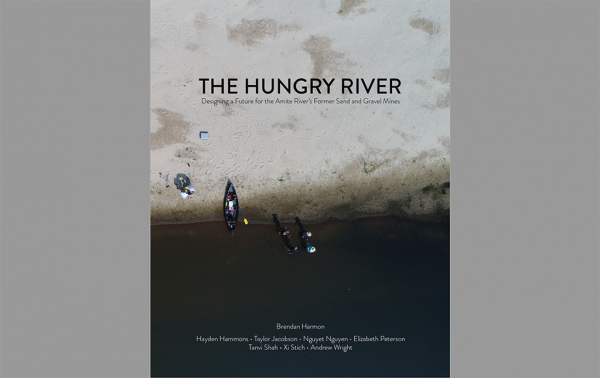

Research, Capacity Building, Visual Communication, Community Planning
Inland from the Coast: A multi-scalar approach to regional climate change responses
Project Goals:
- Gathering and disseminating local ecological knowledge about landscape functionality
- Providing high quality, accessible information on current and future environmental conditions to influence community decision-making
- Evaluating past events to support adaptation responses, strategies, and best practices that are more emotionally and culturally sensitive
- Defining community wellbeing priorities in coastal communities and inland migration destinations
- Integrating ecological conditions and community wellbeing to foreground safety in planning and development decision-making
- Integrating climate adaptation design methods and best practices and other policy tools to increase the likelihood of effective implementation
Outputs include:
- Calibrated and validated basin- and watershed-scale models for a coupled inland-coastal system, that can be used by community leaders and design professionals to provide decision support highlighting critical vulnerabilities and opportunities for adaptation at the community or neighborhood scale
- Neighborhood-scale models that can improve safety and increase adaptive capacity at the local level
- Profiles for current and future wellbeing in coastal and inland communities, including commonalities across regions; community outreach and educational resources including accessible web-based resources to help impacted communities become more resilient
- Best practices for adaptive design and policy that incorporate ecological integrity and community wellbeing considerations
- Vision document positioning project findings particular to the Baton Rouge region in a regionally relevant context to maximize the transferability of this research to other regions and states
Project Team:
-
Track One: Modeling Coupled Inland-coastal Systems for Stormwater Management
-
Clint Willson, PhD, PE
Mike N. Dooley, P.E. Professor, College of Engineering
Director, LSU Center for River Studies
- Craig Colten, PhD Carl O. Sauer Professor, Department of Geography & Anthropology
- Scott Hagan
-
Clint Willson, PhD, PE
Mike N. Dooley, P.E. Professor, College of Engineering
-
Track Two: Understanding Current and Future Community Well-being
-
Traci Birch, PhD, AICP
Interim Managing Director
Assistant Professor in the LSU School of Architecture - Craig Colten, PhD Carl O. Sauer Professor, Department of Geography & Anthropology
- Katie Cherry
- Cecile Guin
- Marla Nelson
-
Traci Birch, PhD, AICP
Interim Managing Director
-
Track Three: Design Application and Policy framework
-
Traci Birch, PhD, AICP
Interim Managing Director
Assistant Professor in the LSU School of Architecture - Jeff Carney Former Director, Coastal Sustainability Studio
- Melissa Daigle Coordinator of Louisiana Sea Grant Legal Program
- Niki Pace
-
Traci Birch, PhD, AICP
Interim Managing Director
-
Students
- Brendan Bailey Architecture
-
Yi Ling Chan
Geography
MS expected May 2018 - Alexandre Cowles Coastal & Ecological Engineering
- Kathleen Eubanks Coastal & Ecological Engineering
-
Audrey Grismore
Geography and Anthropology
PhD candidate - Yuta Masakane Landscape Architecture
-
Hayley Pugh
Architecture
MArch expected May 2018
-
Chris Turnipseed
Engineering
PhD Candidate - Nick Willbanks Mass Communications
-
Dahyung Yang
Landscape Architecture
MLA expected May 2018 -
Adrienne Wood
Energy Law & Policy
J.D./D.C.L. Expected 2019 - Shu Gao Civil Engineering
-
PARTNERS + SPONSORS
- Gulf Research Program (GRP) of the National Academies of Sciences, Engineering, and Medicine
- Robert Wood Johnson Foundation (RWJF)
This integrative team engages multiple disciplines (e.g. architecture, landscape architecture, planning, geography, psychology, engineering, and law) to consider future environmental risk, measures of community well-being in coupled social-ecological systems, and regional design preferences and practice. The goals are to create and test design methods, based on clear projections of future environmental risk and suitability for development, and work to restore and enhance community well-being in the face of climate change.
This work will engage at three scales:
- Pontchartrain Basin (Geologic): Stretching from Baton Rouge to the mouth of the Mississippi River represents a hydrologic and social continuum defined by proximity to the Mississippi River and the Gulf of Mexico. The coastal-inland relationship is underpinned by this geology. As the basin transgresses the relationship between coast and inland communities is physically and socially compressed as floodwater and people migrate inland. At this scale the team proposes 1) a coupled inland-coastal ecological model that accurately assess current and future risk, and 2) engagement of community members from across the inland-coastal transect to define and prioritize elements of current and future well-being.
- East Baton Rouge, Livingston, and Ascension Parish (Amite River Watershed): These parishes house the bulk of the region’s population, and lie within the same watershed, but otherwise don’t coordinate development decision-making. This has resulted in development patterns that disrupt natural and social systems and exacerbate climate impacts, threatening community well-being. At this scale the team proposes 1) engagement of local ecological knowledge holders and community members in discussions related to environmental conditions, social memory, place attachment, community well-being, and design preferences; and 2) engagement of regional leaders to build relationships, policy objectives, and projects founded on basin-scale models and community well-being priorities.
- Community (from subdivision to block to building): Subdivisions are the primary development unit in this region. There is great leeway in their design, the policies that guide them, enforcement mechanisms, cumulative effects on the community at large, etc. At this scale the team will focus on working with neighborhood groups, builders and developers, designers, and individual community members to transform research knowledge into action through design and planning projects.
The project identifies three distinct but interconnected research tracks:
- Regional Mapping and Hydrologic Modeling
- Defining and Measuring Community Well-being
- Design Application and Policy Framework
Four phases of work:
- Data Gathering and Assessment (month 1-9)
- Research Synthesis (month 9-18)
- Design Project Focus (month 18-24)
- Vision and Dissemination (month 24-36)
Final project deliverables:
Healthy & Resilient Baker
This report was uniquely created based on our research done on Baker, LA. This report is meant to holistically support Baker’s long-term recovery goals to strengthen its resiliency and well-being in the face of increasing environmental risks.
CLICK HERE TO VIEW REPORT →

The Hungry River: Designing a Future for the Amite River’s Former Sand and Gravel Mines
This publication is a comprehensive collection of the work done by Dr. Brendan Harmon’s Fall 2018 design studio, LA 7031: WATER SYSTEMS STUDIO, which worked to research and design possible future plans for the Amite River’s former sand and gravel minds.
CLICK HERE TO VIEW STUDIO BOOK →

Spring Up! Denham Springs Masterplan
This publication is the collection of work done by Dr. Brendan Harmon’s Spring 2019 design studio, LA 7061: ADVANCED TOPICS STUDIO. Featured within the studio book are ways to envision a more resilient future for communities at risk of flooding, how to develop policies, and build their capacity to win funding and grants for implementation.
CLICK HERE TO VIEW STUDIO BOOK →
Seeding the Sequence: Establishing Resilient Civic and Environmental Systems in the Gravel Mines of the Amite River
This studio book details the work done by Professor Kristopher Palagi’s Spring 2019 design studio, ARCH 5001: COMPREHENSIVE ARCHITECTURAL DESIGN. This studio used gathered research to design possible resilient civic and environmental systems for the gravel mines of the Amite River.
CLICK HERE TO VIEW STUDIO BOOK →